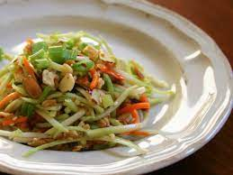

Crunchy Ramen Broccoli Slaw

Descriptions
This is a picture of the Crunchy Ramen Broccoli Slaw recipe. This recipe will be explained in the following page
Ingredients
- 1/4 cup of butter
- 2(3 ounce) packages Oriental-flavor ramen noodle soup, seasoning packet reserved
- 1/2 cup silvered almonds
- 1/4 cup sesame seeds
- 1 (16 ounce) package broccoli coleslaw mix
- 1/2 cup chopped green onion
Dressing
- 1/2 cup salad oil
- 1/2 cup white sugar
- 1/4 cup apple cider vinegar
- 2 tablespoons soy sauce
Steps/Directions
- Preheat the oven to 350 degrees F (175 degrees C)
- Melt the butter in a microwave-safe bowl in the microwave
- Crush the ramen noodles into small pieces; stir the crushed noodles, almonds and sesame seeds into the melted butter.
- Spread the mixture into a baking sheet
- Bake in the preheated oven until golden brown and crunchy, 8-10 minutes; allow it to cool down completely.
- Toss together coleslaw mix and green onion in a large serving bowl
- To make the dressing: we whisk together oil, vinegar, soy sauce and reserved seasoning packets in a separate bowl until it is well combined.
- Stir the cooled noodle mixture into the dressing. Pour the dressing over coleslaw-onion mixture; toss to coat.
Link to recipe